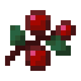
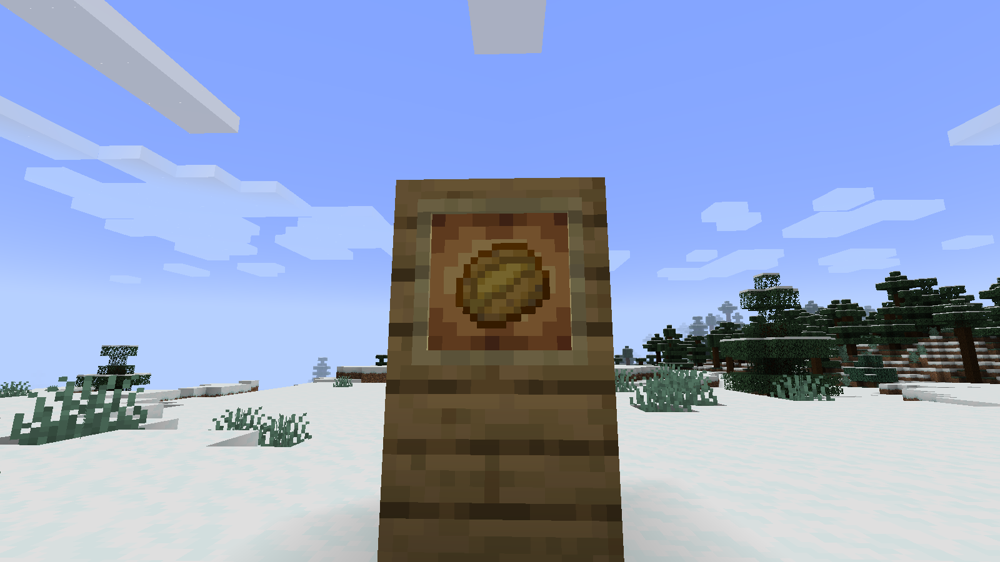
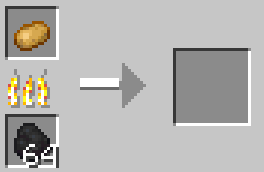
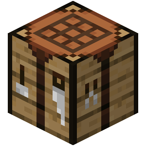

Batata Assada
Item
Batatas assadas podem ser obtidas cozinhando em fornalha, defumador ou fogueira.
Fabricação


 ingredientes:
- 1 Batata.
 Fome:
Fome:
Comer batata assada restaura 5 de fome e 6 de saturação.
 Raridade:
Raridade:
Comum.